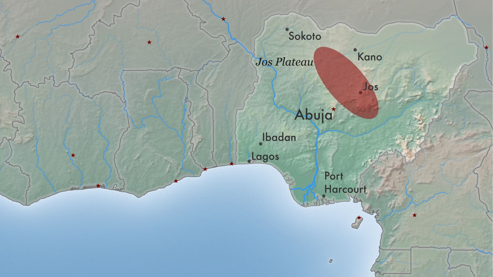
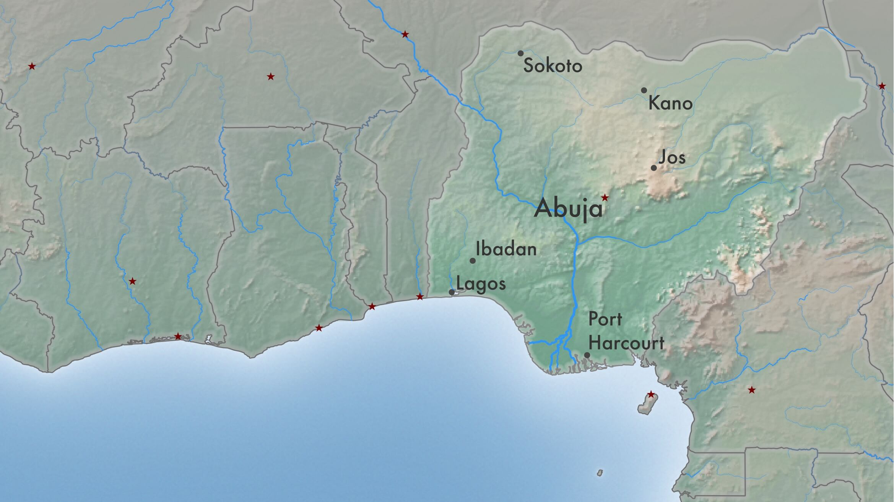
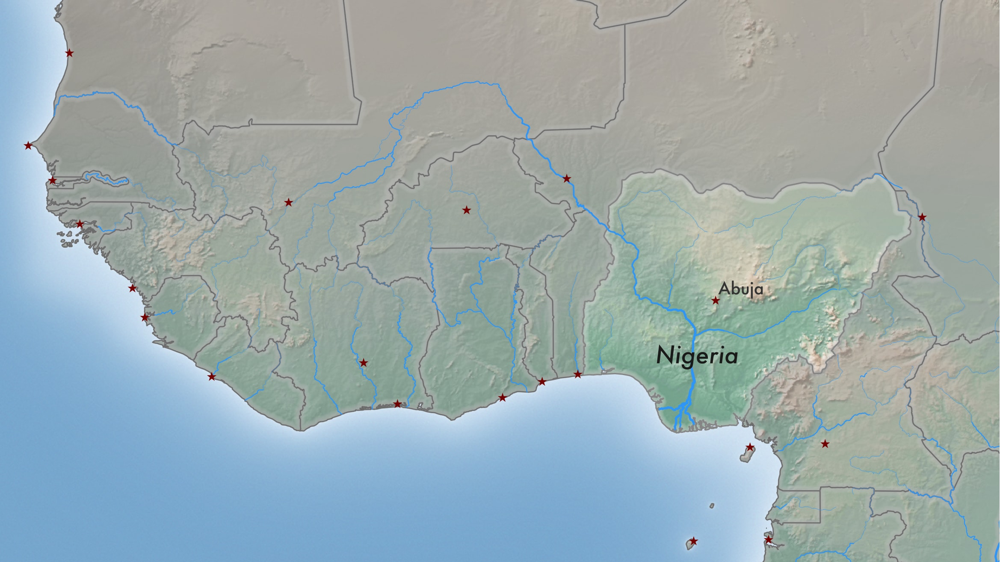
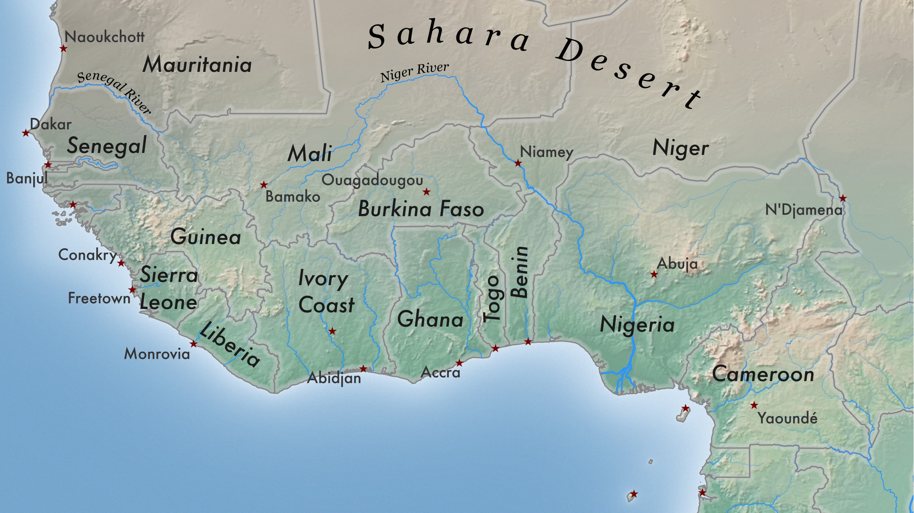
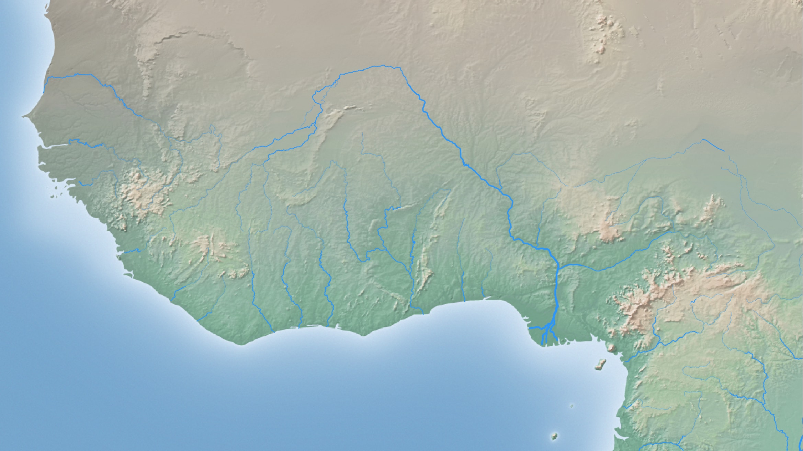

Chapter 2:
Supply
Many of the African archaeological artefacts that find themselves today in European or American
museums made their way into such collections during the colonial period. Alongside several
high-profile lootings, such as the British punitive expedition to Benin in 1897 or Leo Frobenius’s
appropriation of works of Yoruba art from Ife-Ife in 1910, thousands of other pieces have ended up
in private legacies through smaller acts of theft during this period. Nok terracottas, however,
were not discovered until 1928, when the first examples were unearthed by tin mining operations near
the village of Nok in cental Nigeria. Archaeological research on these objects was slow to take
off, with the first significant study being undertaken by Bernard Fagg in the 1950s. By the 1980s,
however, there had been a surge in the illegal export of these figurines, which peaked in the 1990s.
A report on the subject was made in the 1990s and based, in its own words, “on second-hand expatriate
gossip in Lagos”. The report found that at the height of the looting, up to 10 terracottas were being
excavated each day, adding up to some 3000 figurines total per year. The intensification of police
efforts whittled the number of main traders down to just two by 1995, though both of these appeared to
have employed around 1000 diggers each. Far from being a haphazard free-for-all operation, the industry
displayed a high degree of organization. Its methods of evading authorities, however, remained
surpisingly simple. Instead of applying for archaeological permits that were hard to come by, diggers
instead obtained mining accreditations, legally allowing them to dig in search of minerals.
At this early stage in the race, however, prices are not high. According to the report cited above,
diggers in the 1990s might receive up to 1,000 Nigerian naira (around $45) for an exceptional piece.
More recent articles cite slightly higher figures, though it is difficult to confirm their veracity.
Chapter 3:
Transfer
The transfer of artefacts from one country to another requires the active participation of at least
two dealers who have in-depth knowledge of their respective markets. A good price for
a Nok terracotta sold by a local dealer in the 1990s seems to have been in the region of 35,000 Nigerian
naira (around $1,600), already an inflation of around 35 times that which was paid by the dealer to the
digger. This in part reflects the level of risk shouldered by actors at this link in the chain. In
order to export such objects, loopholes must be found or fake permits acquired. In another case,
Subhash Kapoor, a dealer accused of looting artefacts from temples in southern India, achieved this by
simply forging false signatures on paper with fake letterheads. He is currently on trial in Chennai.
Chapter 4:
Demand
Although the European market for African antiquities has its roots in the first objects brought back
from colonial wars, the widespread “taste” for them is a much more recent phenomenon. This perhaps
traces its origin to the modernists, particularly Picasso, Man Ray and others, who incorporated motifs
and styles found in African art into their own creations.
Following this were the landmark sales that form the folkloric heritage of the primitive arts market.
The 1966 sale of the collection of Helena Rubenstein, a cosmetics mogul with a penchant for the arts
of Sudanic cultures, was the first time African wooden sculpture attained 5-figure price-tags. The
Hubert Goldet sale of 2001 was a major step up in terms of scale, with a substantial collection of
600 objects fetching $11.3 million.
In recent years, it has been the sale in successive installments of the Pierre and Claude Vérité
collection that has caused the primitive art world repeatedly revaluate itself. When this was first
brought to market in 2006, the 514 lots brought in some $55 million. Of these, 8 pieces went beyond
$1 million, setting a slew of new records in the course.
Today, demand is cultivated and satisfied by private galleries, auction houses, and public museums.
Indeed, the opening of the Quai Branly museum in Paris in 2006 contributed greatly to the popularisation
of this market. However, it is easy to underestimate the power of peer-to-peer sales through platforms
such as ebay, the UK and USA branches of which enable more than 600,000 sales every year.
At this end of the chain, Nok figures can easily fetch between $20 to $30 thousand.
Chapter 5:
Conclusion / Repatriation?
ICOM conclude their Red List of African antiquities at risk with an appeal to “museums, auction houses,
art dealers, and collectors to stop buying them”. Indeed, to curtail demand in the market countries
seems to be the most obvious and easily-enacted policy. Due to difficulties in provenancing stolen
pieces, it becomes very difficult to prove the illegality of a transaction once an object reaches a
market country. Despite several well-publicised cases in recent years of museums returning their
artefacts to their home countries, the rate of repatriation in general is not favourable. As a
percentage of all artefacts stolen from the African countries between 2006 and 2015, only 11.5% of
objects were repatriated.
Nevertheless, in a further development, objects that have been part of museum collections for many
years are slowly beginning to find their way home. The British Museum is currently in negotiations
with the government of Nigeria to return the bronze plaques looted from the Oba’s palace in the old
capital of the kingdom of Benin. In 2014, the Museum of Fine Arts in Boston set a precedent by
returning a Nok figurine that it had bought from the Galerie Walu in Basel, Switzerland, which had
been supplied along with a forged waiver of ownership from the Nigerian National Commission of Museums
and Monuments (NCMM).
The moral case for returning such artefacts is strong. It can only be hoped that the act of returning
carries with it more than just symbolic weight.